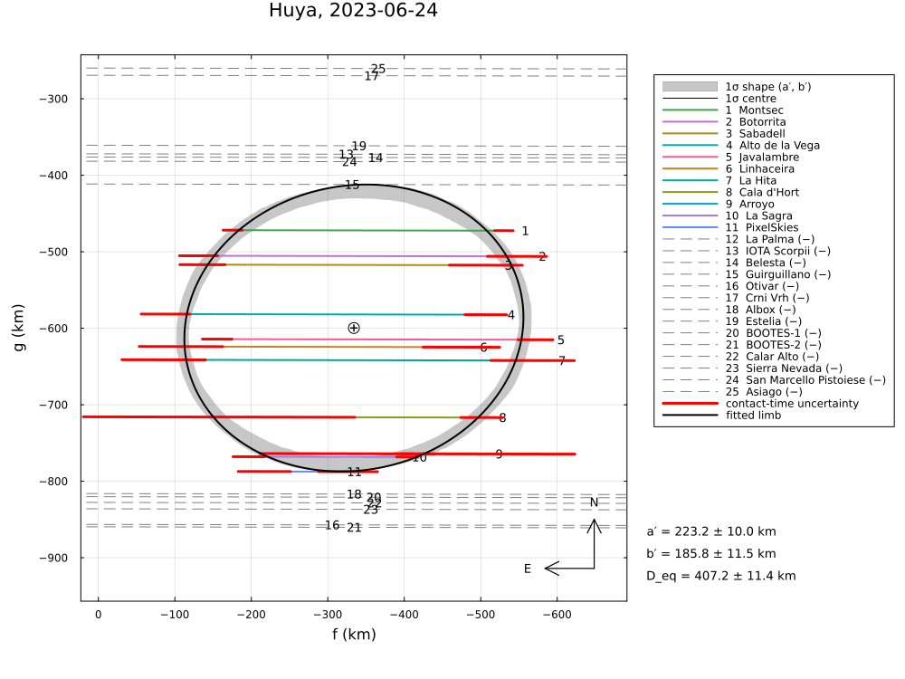
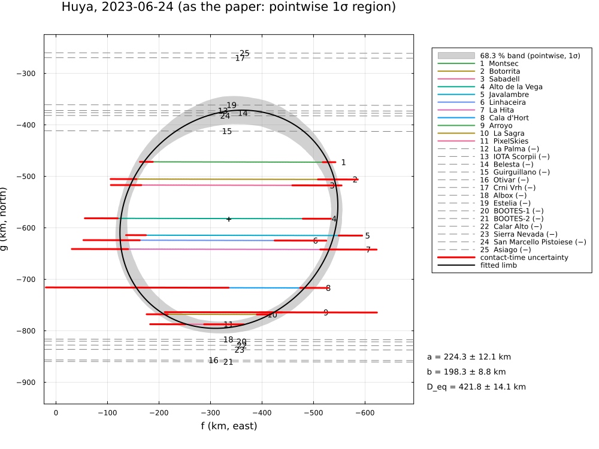

Huya, 2023 June 24, and its satellite
The stellar occultation by (38628) Huya and its satellite on 2023 June 24, reduced from the published timings of Rommel et al. (2025), Planet. Sci. J. 6, 48, "Stellar Occultation Observations of (38628) Huya and Its Satellite: A Detailed Look into the System": eleven positive Huya chords, 14 negative chords and one satellite chord.
The example covers:
- the free and the position-angle-restricted limb fits ("2023 Free", "2023 Restrict");
- the restricted refit of the 2019 data of Santos-Sanz et al. (2022) ("2019 Restrict");
- the astrometry and the satellite chord.
The paper's free solution crosses three negative chords. With all negative chords the limb is smaller (R_eq 204 vs 210 km), and the position-angle restriction from the satellite orbit becomes incompatible with the data.
The data are transcribed in examples/data/huya_20230624.jl, with the stored JPL Horizons ephemeris, so the script runs offline:
julia --project=. examples/huya_2023.jl [output_dir] (default: examples/output/huya_2023)The code is not run when the manual is built. The output after each section is that of the last run of examples/huya_2023.jl, stored in examples/output/huya_2023/output.txt.
using Occultations, Random, Printf, Statistics
using Plots
import CairoMakie # saves the GeoMakie maps (Makie figures)
include(joinpath(@__DIR__, "standard_figures.jl"))
include(joinpath(@__DIR__, "data", "huya_20230624.jl"))
include(joinpath(@__DIR__, "data", "huya_20190318.jl"))
out = length(ARGS) >= 1 ? ARGS[1] : mkpath(joinpath(@__DIR__, "output", "huya_2023"))
rng = MersenneTwister(2023)
P = HUYA2023_PAPER
row(label, r) = @printf("%-36s a′ = %6.1f ± %5.1f b′ = %6.1f ± %5.1f PA = %5.1f ± %4.1f R_eq = %6.1f ± %5.1f χ²/dof = %6.3f\n",
label, r[:equatorial_radius]..., r[:semi_minor_axis]..., mod(r[:position_angle][1], 180),
r[:position_angle][2], r[:equivalent_radius]..., reduced_chi2(r))
prow(label, x) = @printf("%-36s a′ = %6.1f ± %5.1f b′ = %6.1f ± %5.1f PA = %5.1f ± %4.1f R_eq = %6.1f ± %5.1f χ²/dof = %6.3f\n",
label, x.a..., x.b..., x.position_angle..., x.R_equiv..., x.chi2_pdf)Event and geometry (paper values in parentheses)
ev = huya2023_event()
D = ev.ca.dist_km
@printf("%d positive and %d negative chords; distance %.2f au, shadow velocity %.2f km/s (%.2f), Fresnel scale %.2f km (%.2f)\n",
count(ispositive, ev.chords), count(isnegative, ev.chords), D / 1.495978707e8, ev.ca.vel, P.velocity,
fresnel_scale(0.7, D), P.fresnel_km)11 positive and 14 negative chords; distance 28.04 au, shadow velocity 22.43 km/s (22.43), Fresnel scale 1.21 km (1.20)2023 June 24: limb fits (Table 3; radial residuals as SORA)
prow("paper, 2023 Free", P.free)
prow("paper, 2023 Restrict (PA 53.7 ± 2.2°)", P.restrict)
rn = fit_limb(ev; residual=:radial, negative=:none, rng=rng)
row("free, negative chords ignored", rn)
println("negative chords crossed by this limb:")
for x in check_negative_chords(rn)
x.conflict && @printf(" %-12s crossed by %.1f km\n", x.chord, -x.distance)
end
rf = fit_limb(ev; residual=:radial, rng=rng)
row("free, negative chords hard", rf)
rp = fit_limb(ev; residual=:radial, priors=Dict(:position_angle => P.restrict.position_angle), rng=rng)
row("PA prior 53.7 ± 2.2°, negatives hard", rp)
println("The paper filtered its solutions with the Belesta negative only; the Guirguillano chord")
println("(cycle 10 s) lies between Montsec (positive) and Belesta and cuts limbs with PA ≈ 30°.")paper, 2023 Free a′ = 222.5 ± 9.1 b′ = 198.7 ± 15.2 PA = 31.5 ± 15.5 R_eq = 210.3 ± 11.0 χ²/dof = 0.682
paper, 2023 Restrict (PA 53.7 ± 2.2°) a′ = 218.7 ± 8.1 b′ = 200.3 ± 14.9 PA = 53.7 ± 2.2 R_eq = 209.3 ± 10.3 χ²/dof = 0.745
free, negative chords ignored a′ = 224.3 ± 12.1 b′ = 198.3 ± 8.8 PA = 45.4 ± 27.6 R_eq = 210.9 ± 7.0 χ²/dof = 0.750
negative chords crossed by this limb:
Guirguillano crossed by 41.1 km
San Marcello Pistoiese crossed by 10.9 km
Belesta crossed by 5.4 km
IOTA Scorpii crossed by 1.1 km
free, negative chords hard a′ = 223.2 ± 10.0 b′ = 185.8 ± 11.5 PA = 12.0 ± 12.6 R_eq = 203.6 ± 5.7 χ²/dof = 0.950
PA prior 53.7 ± 2.2°, negatives hard a′ = 247.8 ± 11.0 b′ = 174.9 ± 8.7 PA = 26.1 ± 2.1 R_eq = 208.2 ± 5.3 χ²/dof = 10.648
The paper filtered its solutions with the Belesta negative only; the Guirguillano chord
(cycle 10 s) lies between Montsec (positive) and Belesta and cuts limbs with PA ≈ 30°.Posterior of the free fit
post = sample(rf; nsteps=4000, rng=rng)
s = derived_summary(post; rng=rng)
@printf("R_eq = %.1f -%.1f +%.1f km, b′ = %.1f -%.1f +%.1f km\n", s.equivalent_radius..., s.semi_minor_axis...)R_eq = 201.5 -5.0 +4.9 km, b′ = 181.4 -6.5 +6.8 kmAstrometry (Table 4)
t = Epoch(P.astrometry.epoch)
for (label, r) in (("free", rf), ("PA prior", rp))
a = astrometry(r)
ra_, dec_, _ = ephem_radec(ev.body, t)
r_, d_ = Occultations.offset_radec(ra_, dec_, a.offset_ra, a.offset_dec)
@printf(" %-10s %s UTC: RA %s Dec %s (σ %.2f, %.2f mas)\n", label, P.astrometry.epoch, format_ra(r_; digits=6),
format_dec(d_; digits=5), a.ra_err, a.dec_err)
end
@printf(" %-10s RA %s Dec %s (σ %.2f, %.2f mas)\n", "published", P.astrometry.ra,
P.astrometry.dec, P.astrometry.ra_err, P.astrometry.dec_err) free 2023-06-24T00:58:10.9 UTC: RA 17 16 43.653349 Dec -07 00 20.11884 (σ 0.38, 0.44 mas)
PA prior 2023-06-24T00:58:10.9 UTC: RA 17 16 43.653357 Dec -07 00 20.11901 (σ 0.42, 0.42 mas)
published RA 17 16 43.653342 Dec -07 00 20.11836 (σ 0.51, 0.72 mas)The satellite chord (La Palma)
S = P.satellite
day = "2023-06-24T"
ti, te = Epoch(day * S.immersion[1]), Epoch(day * S.emersion[1])
tr = track(ev, ev["La Palma"])
fi, gi = tr(ti - ev.tref); fe, ge = tr(te - ev.tref)
L = hypot(fe - fi, ge - gi)
σL = hypot(S.immersion[2], S.emersion[2]) * hypot(Occultations.velocity(tr, (ti - ev.tref + (te - ev.tref)) / 2)...)
fm, gm = (fi + fe) / 2 - rf[:center_f][1], (gi + ge) / 2 - rf[:center_g][1]
k = D / 206264.806
@printf("chord length %.1f ± %.1f km (paper %.0f ± %.0f km)\n", L, σL, S.chord_km...)
@printf("chord midpoint relative to Huya's centre: Δα cos δ = %+.4f″, Δδ = %+.4f″, %.0f km\n", fm / k, gm / k, hypot(fm, gm))
@printf("paper (satellite centre, mean of the two solutions): Δα cos δ = %+.5f″, Δδ = %+.5f″, separation %.0f km\n",
S.offset_arcsec[1][1], S.offset_arcsec[2][1], S.separation_km)
println("(a single chord leaves the satellite centre on either side of the chord)")chord length 182.9 ± 9.5 km (paper 179 ± 14 km)
chord midpoint relative to Huya's centre: Δα cos δ = +0.0653″, Δδ = -0.0439″, 1599 km
paper (satellite centre, mean of the two solutions): Δα cos δ = +0.06546″, Δδ = -0.04440″, separation 1603 km
(a single chord leaves the satellite centre on either side of the chord)2019 March 18 refitted with PA = 51.6 ± 2.2° ("2019 Restrict", Appendix B)
ev19 = huya_event()
prow("paper, 2019 Restrict", P.restrict2019)
r19 = fit_limb(ev19; residual=:radial, priors=Dict(:position_angle => P.restrict2019.position_angle), rng=rng)
row("PA prior, timing errors only", r19)
r19s = fit_limb(ev19; residual=:radial, priors=Dict(:position_angle => P.restrict2019.position_angle),
scale_errors=true, rng=rng)
row("PA prior, errors × √(χ²/dof)", r19s)
println("The paper's errors (± 0.11 km in a′) are those of the timing errors alone; with χ²/dof ≈ 210")
println("they are ≈ 15 times too small.")paper, 2019 Restrict a′ = 218.1 ± 0.1 b′ = 195.6 ± 0.2 PA = 51.6 ± 2.2 R_eq = 206.5 ± 0.2 χ²/dof = 210.900
PA prior, timing errors only a′ = 217.3 ± 0.1 b′ = 189.2 ± 0.4 PA = 62.6 ± 0.4 R_eq = 202.8 ± 0.2 χ²/dof = 194.211
PA prior, errors × √(χ²/dof) a′ = 217.3 ± 1.7 b′ = 189.2 ± 5.8 PA = 62.6 ± 6.0 R_eq = 202.8 ± 3.2 χ²/dof = 194.211
The paper's errors (± 0.11 km in a′) are those of the timing errors alone; with χ²/dof ≈ 210
they are ≈ 15 times too small.Figures
savefig(plot(ev; title="Huya, 2023-06-24: chords", size=(1000, 750)), joinpath(out, "huya2023_chords.png"))
savefig(plot(rp; title="Huya, 2023-06-24: PA prior 53.7 ± 2.2°", size=(1000, 750)), joinpath(out, "huya2023_limb_pa_prior.png"))
savefig(plot(rn; title="Huya, 2023-06-24: negative chords ignored", size=(1000, 750)), joinpath(out, "huya2023_limb_no_negatives.png"))
savefig(plot(r19s; title="Huya, 2019-03-18: PA prior 51.6 ± 2.2°", size=(1000, 750)), joinpath(out, "huya2019_restrict.png"))
# as in the paper: Fig. 9, 3σ region of the restricted 2019 fit (timing errors only)
savefig(plot(r19; uncertainty=:pointwise, nsigma=3, title="Huya, 2019-03-18 restricted (as the paper: pointwise 3σ region)", size=(1000, 750)),
joinpath(out, "huya2019_restrict_paper.png"))
# the standard figures: limb fits (default, 68.3 % region, as the paper), posterior, maps (prediction,
# post-fit, comparison) and the globe
standard_figures("huya2023", rf; out=out, posterior=post, paper=(fit=rn, uncertainty=:pointwise, nsigma=1),
projection="+proj=laea +lon_0=-3 +lat_0=40", limits=(-20, 16, 26, 48), window=600, marks=30)
println("figures written to ", out)The free fit with all negative chords as hard constraints, and the fit with the negative chords ignored (in the paper's style), which crosses three of them:


The results are discussed in Comparison with published reductions.